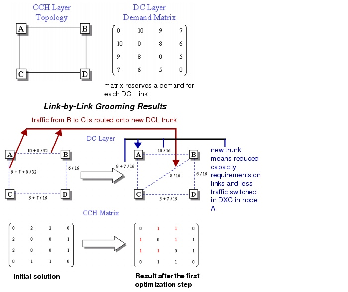

Grooming DCL to OCH Traffic > Optimization Algorithms: Descriptions > Link-by-Link (LBL) Optimization Algorithm
Link-by-Link (LBL) Optimization Algorithm
The initial solution of the link-by-link grooming algorithm assumes full grooming in intermediate nodes. SP Guru Transport Planner does this by routing the DCL demands on a DCL trunk topology that contains only the links present in the OCH layer.
If you specified grooming with protection, SP Guru Transport Planner routes the DCL demands using the shortest-cycle approach; if you specified grooming without protection, SP Guru Transport Planner routes the DCL demands using the shortest-path approach.
This solution has the following characteristics:
- If a DCL connection is unsupported by an underlying OCH link, it is accommodated over multiple DCL trunks (multiple hops in the DCL layer). This implies switching in the intermediate DXCs.
- All optical channels are single-hop connections in the OCH layer; this implies no switching in the OXCs.
- SP Guru Transport Planner obtains the initial trunk size by adding all DCL capacity that was routed over that particular link.
- SP Guru Transport Planner derives the corresponding wavelength demand by applying the multiplex factor between both the DCL and OCH layers. For example, 18 STM-1's on a DCL trunk require two optical channels at STM-16.
Consequently, wavelength utilization is high and all traffic is switched in intermediate DCL nodes, resulting in a high switching cost in the DCL layer. The optimization algorithm reduces the cost figure by inspecting the transit traffic in the DXC nodes and inserting DCL trunks where appropriate.
For example, assume that there is a lot of traffic between nodes X and Y, but there is no direct DCL trunk (no optical channel between these nodes). In this case, the link-by-link algorithm adds a direct trunk between X and Y; then it off loads the traffic towards this trunk. This reduces switching in intermediate nodes, possibly at the expense of an additional optical channel.
Algorithm Description
The link-by-link algorithm does the following steps:
- Initial solution (full intermediate grooming): Route DCL traffic on a DCL topology identical to the OCH-layer topology, and size DCL trunks accordingly.
- Check for a new DCL trunk to add: Calculate cost savings by adding a new DCL trunk between nodes that exchange a lot of traffic. If you specified protection, SP Guru Transport Planner must ensure that the working and protection paths used by a DCL demand remain disjoint. Retain the DCL link that results in the greatest cost savings.
If SP Guru Transport Planner finds a link that results in a cost savings, continue with step 3.
If SP Guru Transport Planner does not find a link that results in a cost savings, continue with step 4.
- If a new DCL trunk is found (which results in a cost savings):
- If no new DCL trunk is found: end
Figure 8-14 provides an example of link-by-link grooming in action (in this case, without using protection). Adding another trunk requires an additional channel between B and C, but reduces the channel requirement between A-C and A-B. Optimization increases the meshing degree of the DCL topology and adapts the demand for the OCH layer. As in the end-to-end grooming example, the optimization step is accepted only if it results in a net cost saving.
Figure 8-14 OCH Topology and DCL Demands Before Link-by Link Grooming

| Home © 1987-2007 OPNET Technologies, Inc. All Rights Reserved. This software may be covered by one or more U.S. Patents. See complete patent notice in the Legal Notices section. OPNET Support Center |